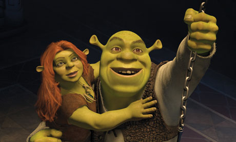
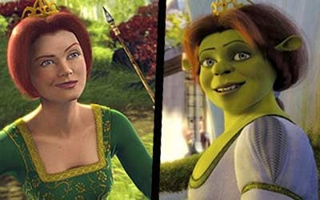
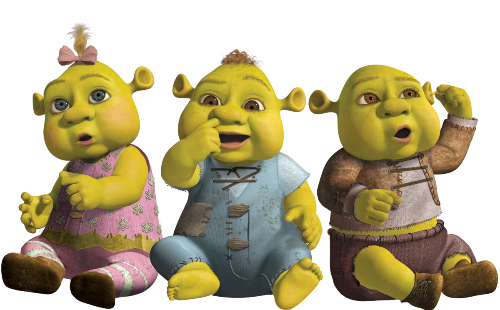

About Shrek
Shrek is an ogre and orge's are known to be ruthless and bloodthirsty. However, Shrek has many layers, just like onions, and his perceived angre and hatred for the world is later revealed to be a hard exterior hiding a loving ogre who falls in love. Along with his friends, Donkey and Puss in Boots, Shrek and his wife Fiona embark on many adventures together that help to shatter the negative stereotypes thrust upon ogres
Shrek's Characteristics
- He is a family man
- He is an introvert
- He is quite possessive over his space
About Fiona 
Fiona is a human princess who was cursed as a baby to be a human by day and an ogre by night. Her parents, the King and Queen of Far Far Away, locked her up in a tower so that a hero would come rescue her and release her from her curse with True Love's Kiss. Shrek saves her and they fall in love. What a meet cute. Fiona then decides to become an ogre forever so that she can be with Shrek. Fiona is actually such a badass and she and Shrek have 3 green babies together.
About the triplets 
Fergus, Farkle and Felicia are Shrek and Fiona's 3 children. They are quite a handful, just like human babies.
Shrek's Friends
Shrek doesn't have many friends, but the friends he does have are ride or die.